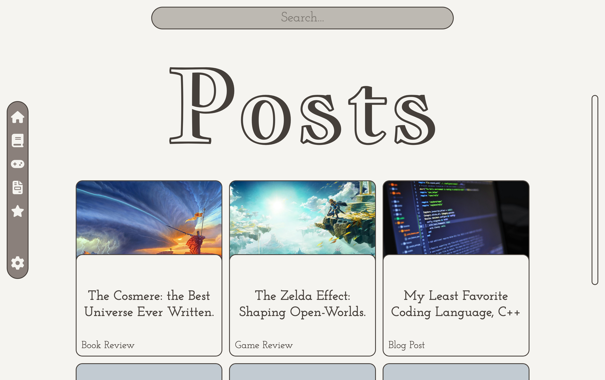
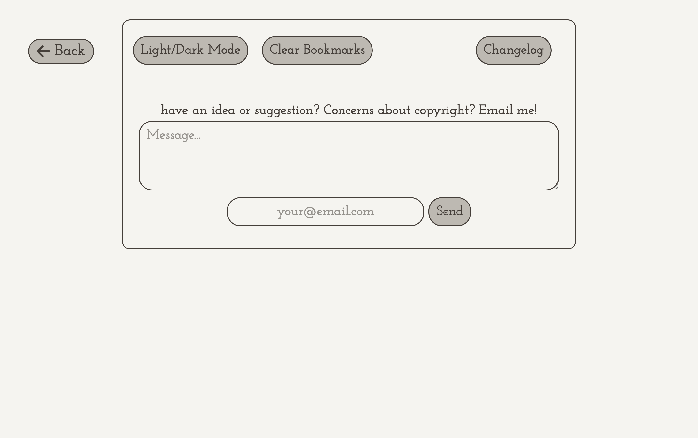
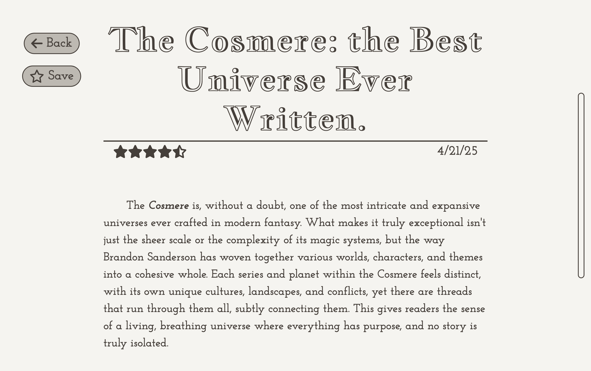
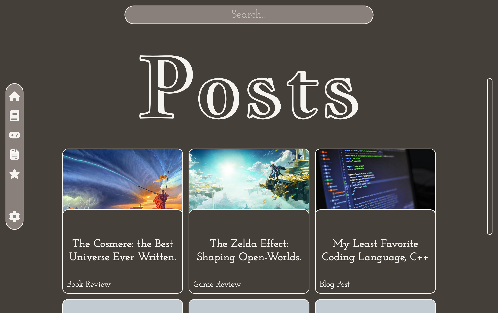

This is a personal blogging platform I built from scratch, featuring a clean interface, powerful filters, a built-in search system, and full support for dark and light themes. It's designed to feel simple, readable, and pleasant to use.

I wanted a space where I could write freely while experimenting with UI design. My focus was on creating a smooth reading experience, fast navigation, and customization features like bookmarks and theme settings.
I handled the entire project myself, including the layout, styling, search logic, and filter system.


The site went through a few designs to dial in readability and page flow. I refined the UI and added persistent settings so users can keep their theme and bookmarks. Most of my time went into the user preferences.
The blog now has a fully functional post system with filtering, searching, bookmarking, and customizable appearance. It's fast and minimalistic, and it gives me a space to write out my ideas.
